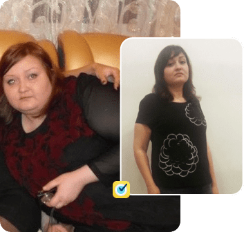
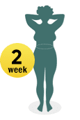
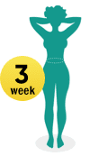
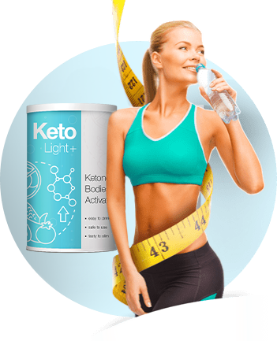
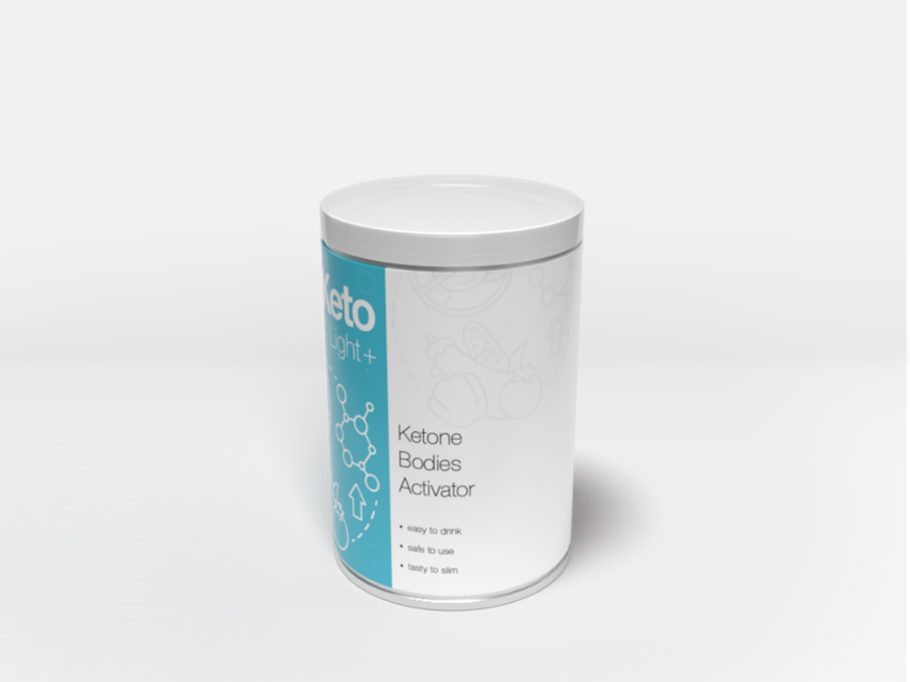
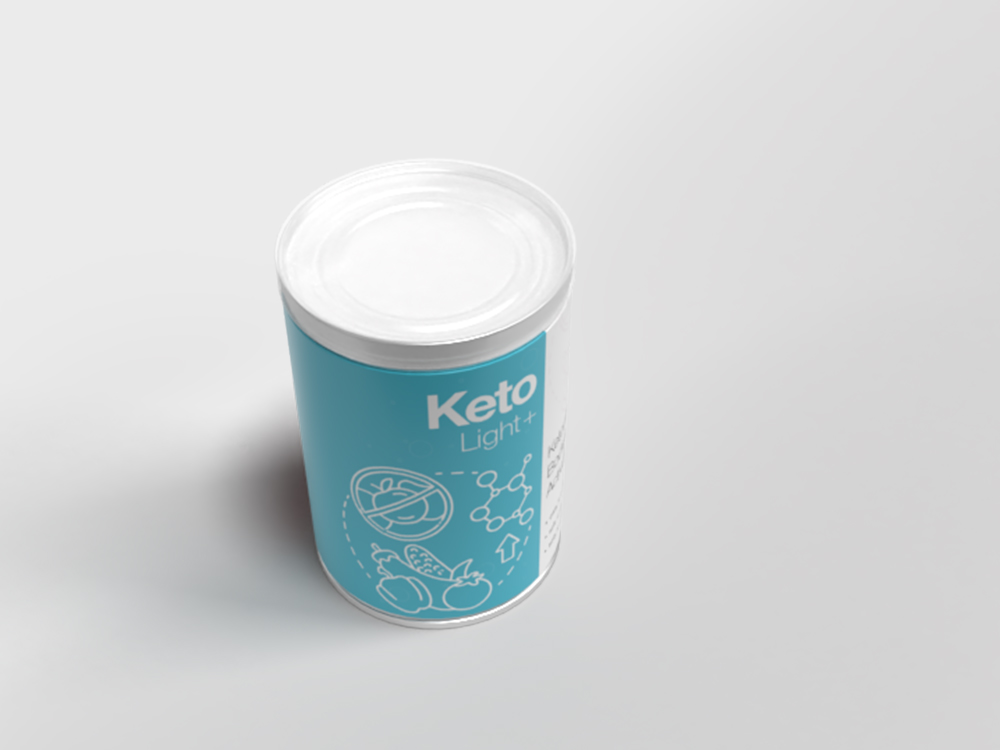
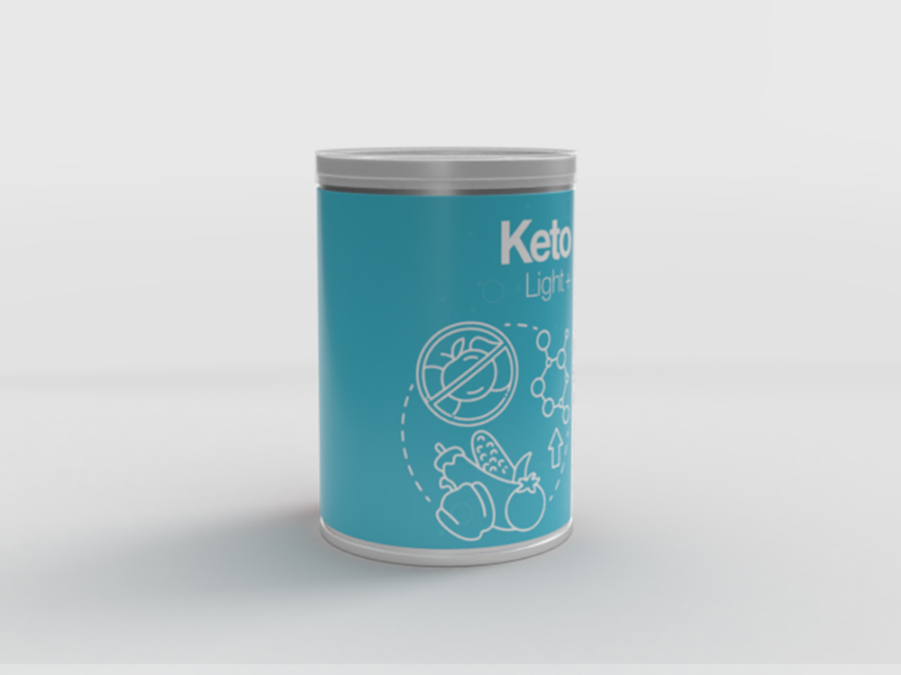

¡Atención! Producción cargada. Los siguientes productos solo se pueden enviar en de 4 días.
Eficiencia demostrada por los médicos
Bestseller 2019-2020
Forma revolucionaria de perder peso
basado en dieta cetogénica
Início
quema activa de grasa inmediatamente después de la toma
Combate la
grasa más "dañina"
– visceral
Pérdida
de peso sin ejercicio.
Un hit universal
en la región de la nutrición
Dieta cetogénica:
¡la única dieta con la que todos pierden peso!
La grasa se va
de tales lugares como:
Vientre
Gluteos
Cintura
Piernas
Espalda
Brazos
Cara
Cuello
¿Cómo de rápido?
Datos de ensayos clínicos.
de las personas
7-10 kg
en un mes
de las personas
5-7 kg
en un mes
de las personas
Menos de 5 kg
en un mes
de las personas
Más de 10 kg en un mes
Ved los resultados
de la pérdida de peso de nuestros compradores de Keto Light con la dieta cetogénica
La principal ventaja de Keto Light es que el polvo activa de
forma segura
los procesos naturales de quema de grasa en el cuerpo humano.

¡Muchos de los que perdieron peso con Keto Light
no han podido perder peso durante años!
Los principales nutricionistas del mundo ya han llamado a Keto Light la salvación de la humanidad del sobrepeso. Ahora tiene las mayores esperanzas, y la herramienta ya se ha incluido en los programas estatales de pérdida de peso
en varios países europeos.
¿Cómo funciona
la dieta cetogénica y Keto Light?
El principio de acción se basa en la capacidad de nuestro cuerpo para recibir energía no solo de los carbohidratos, sino también de las grasas.
Cuando dejamos de consumir carbohidratos y comenzamos a comer mucha grasa, nuestro metabolismo se reconstruye.
Se producen sustancias especiales en el hígado:
cuerpos cetónicos, diseñados para descomponer la grasa. Esta es la base de la dieta cetogénica.
Sin embargo, los científicos del Instituto Alemán de Nutrición Humana fueron más allá al crear un medicamento especial que contiene
sustancias naturales similares en acción a los cuerpos cetónicos.
También están destinados a quemar grasa.
Los cuerpos cetónicos
son la base de Keto Light, por lo que todos están perdiendo peso con este polvo.
Estas sustancias se extraen de componentes naturales, por lo tanto, no dañan el cuerpo y, además, tienen una eficiencia extremadamente alta (¡por lo que superan los cuerpos cetónicos de la persona en más de 15 veces!).
Los estudios clínicos han demostrado
que cuando se toman, el peso comienza a disminuir rápidamente y con un 100% de eficiencia.
Etapas de perder peso
con Keto Light
El curso de pérdida de peso de Keto Light se puede repetir varias veces hasta lograr la forma deseada.
Reestructurar
el cuerpo para quemar grasas activamente
Al final de la semana,
1-2 kg se van
automáticamente
Disminución
del apetito y de la sensación de hambre.

Disparador de quema de grasa
abdominal
El peso comienza a desaparecer
rápidamente
Aparece
mucha energía, el estado de ánimo mejora

Quema de grasa activa
en todas las partes del cuerpo.
Resultados notables todos los días
La grasa se elimina de las
áreas problemáticas.
Notable armonía
Contorneando de la cintura y pérdida de peso en la cara
Se desarrollan
hábitos saludables de alimentación
Efectos beneficiosos adicionales
de Keto Light en el cuerpo

Alisa la celulitis
Estimula la limpieza activa y la desintoxicación a nivel celular.
Normaliza el equilibrio agua-sal y alivia la hinchazón.
Keto Light es la dieta más cómoda para las personas que siguen una dieta cetogénica.
Sin hambre
Si ejercicios físicos
Sin daño a la salud
Opinión experta
de nutricionistas
Richard Groot, famoso nutricionista británico, más de 30 años de experiencia.
“Por el momento, Keto Light es la mejor manera de perder peso. Su principal ventaja es que es una forma muy sencilla. Es suficiente tomar el polvo de Keto Light de acuerdo con las instrucciones y adherirse a la dieta cetogénica, para que después de unos días pueda ver cómo se van los kilogramos acumulados. Y con beneficios para la salud.
Últimamente recomiendo Keto Light a todos mis pacientes que se adhieren a la dieta ceto, y las revisiones sobre tal pérdida de peso son las más positivas. ¡El polvo ayuda a todos! Si no ha probado Keto Light, le aconsejo que lo haga lo antes posible. Keto Light puede sorprenderte.
Comparación
de Keto Light
Con otros productos para adelgazar
Puede perder peso rapidamente
Adelgazar de forma totalmente automática
Beneficios para la salud
Sin hambre y tormento
Se va la grasa visceral
Precio asequible
Ejercicio y dieta
Suplementos dietéticos
Cirugía
La forma revolucionaria de perder peso "Keto Light"
Puede perder peso rapidamente
Adelgazar de forma totalmente automática
Beneficios para la salud
Sin hambre y tormento
Se va la grasa visceral
Precio asequible
Comentarios de aquellos
que ya lo han intentado
Marina,
29 años, Madrid
«El producto es genial !!! Nunca he perdido tanto peso como con él. Simple y rápido. Perdí 18 kg. Estuve atormentada por el exceso de peso durante más de 10 años, y ya intenté de todo. Algunas dietas ayudaron, pero luego el peso volvió nuevamente. La dieta ceto con Keto Light resultó ser la más efectiva. El efecto es super! Aconsejé Keto Light a mi amiga. ¡Ella también arrojó casi 24 kg con su ayuda!»
Luz,
55 años, Palma de Mallorca
«Tengo 55 años. Sufro de plenitud desde los 41 años. En los peores períodos, el peso era de 117 kg. En el último año, la salud se ha vuelto muy mala. El médico dijo que es urgente perder peso, porque ni el corazón ya no puede resistir, ni las articulaciones. Probé la dieta ceto con Keto Light. Para ser honesta, realmente no creía que este método me ayudaría. Pero al final, arrojé casi 30 kg. Tomó Keto Light un curso. Ahora mi salud está mejor. Estoy muy satisfecha con el resultado, ordenare otra vez Keto Light»
Cristina,
34 años, Pontevedra
«Me gustó perder peso con Keto Light por el hecho de que no hay nada que hacer. Simplemente seguir una dieta ceto, beba polvo con agua y pierda peso. No encontré ningún efecto negativo en el cuerpo. Por el contrario, apareció mucha energía, fue mejor dormir lo suficiente, la piel mejoró, las espinillas que me habían molestado antes desaparecieron, ¡la celulitis desapareció! Perdí 11 kg en 1 mes. Me ha gustado todo. Tomaré Keto Light en adelante. Aconsejo a todos»
Keto Light Fotos originales del producto

Uso simple de Keto Light
Keto Light
El peso comenzará a disminuir en 2-3 días después del inicio del curso.
porción
Por 1 porción
Agua
Disolver el polvo en agua
veces al días
Repetir 3 veces
por día
Cómo ordenar
Keto Light
Un éxito mundial en el campo de la nutrición está ahora en España
Solicitud
Deje una solicitud en este sitio, indicando el número de teléfono
Llamada
Le devolveremos la llamada para especificar la dirección de entrega
Entrega
Entregamos los productos a la oficina de correos más cercana
Resepción
Solo tendrá que venir a la oficina de correos y recibir el paquete.
 de las personas
de las personas de las personas
de las personas


 porción
porción Agua
Agua veces al días
veces al días Solicitud
Solicitud Llamada
Llamada Entrega
Entrega Resepción
Resepción